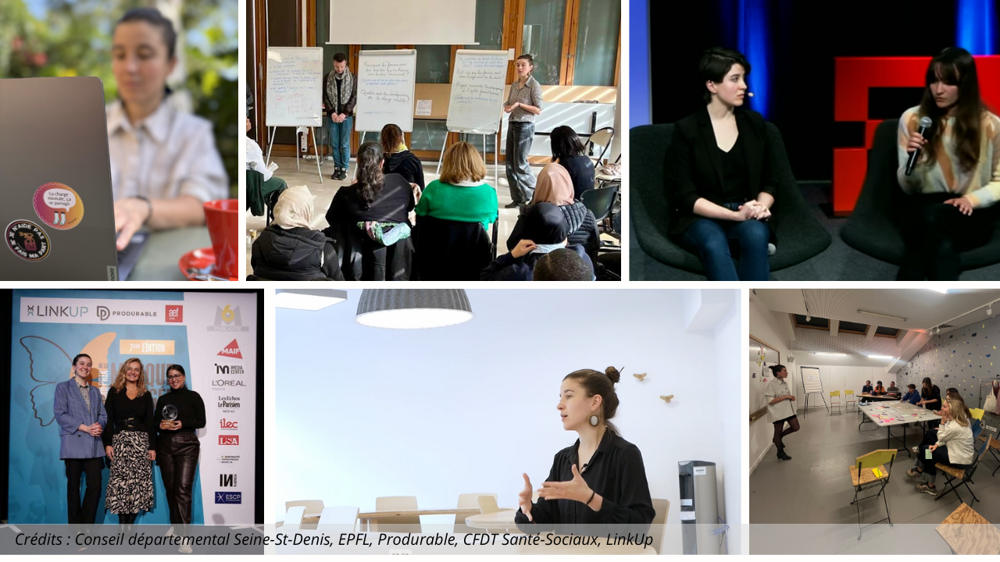

Vous avez des difficultés pour lire ce mail ? Consultez la version en ligne.
Bonjour,
Chaque début d'année, je décide de me (re)mettre au sport, d'arrêter le chocolat, et d'appeler mes parents plus souvent. Vous aussi, vous vous êtes déjà fait ce genre de promesse ?
Honnêtement, ça ne m'a jamais vraiment satisfaite. Et en plus, ça n'a jamais tenu bien longtemps ni impacté durablement ma vie. Cette année, je veux aller plus loin. En 2025, je veux aligner mes choix personnels et professionnels sur des objectifs qui m'enthousiasment ET impactent ✨réellement✨ la société.
🎯 Dans ce mail, je vous raconte comment j'ai radicalement changé de quotidien en 2024, comment je compte aller encore plus loin en 2025 et comment vous pouvez, vous aussi, aligner vos résolutions avec vos valeurs cette année.
Je suis Marie Vialaret, statisticienne et conférencière spécialisée dans les inégalités de genre et la charge mentale, et présidente de l'association T'as pensé à ?. Et en 2024, j'ai pris un virage à 180 degrés.
Mon activité d'indépendante a été la première impactée. De prof particulière de statistiques, je suis passée conférencière et consultante à plein temps et dédie aujourd'hui toute mon énergie à sensibiliser aux inégalités de genre, à la charge mentale et aux solutions possibles. J'ai déménagé d'Angleterre en France, puis au Mexique. Je partage désormais mon temps entre ces deux pays, entre ma famille et ma belle-famille. J'ai été invitée à plus d'événements et d'interviews que lors des trois années précédentes. J'ai aussi eu à gérer des déceptions, mais chaque difficulté a été une opportunité de progresser et de mieux définir mes priorités. 💪
Et je suis très fière de ce que j'ai accompli. Mon année 2024, c'était :
🥈 Un prix : Au salon Produrable, le prix argent de la marque engagée pour mon travail au sein de l'association TPA sur la charge mentale en entreprise et l'engagement de mes partenaires.
🎤 Plus de 200 personnes accompagnées dans leur prise de conscience et leur gestion de la charge mentale avec des conférences et ateliers pour les collaborateur·ices des entreprises, collectivités et le grand public.
💜 Des milliers de femmes soutenues par le travail de toute l'équipe de T'as pensé à ?, que j'ai le plaisir et l'immense fierté de diriger.
"Done is better than perfect", mieux vaut FAIT que PARFAIT. Oser, me lancer pour incarner les valeurs qui me tiennent à cœur, c'est ce que j'ai fait et ce qui m'a permis d'avancer et d'inspirer autour de moi.
👉 Une première question pour vous : qu'avez-vous osé en 2024 ? Comment êtes-vous sorti·e de votre zone de confort ? Qu'avez-vous ressenti à ce moment-là ? (Oups, ça fait 3 questions 😅)
2025 sera l'année où j'irai encore plus loin en visant des objectifs à grande échelle :
✨ Promouvoir l'égalité de genre : Sensibiliser davantage d'organisations, grandes ou petites, pour créer des environnements inclusifs où les femmes ne portent plus seules le poids de la double journée.
✨ Rendre l'invisible visible : Mettre la charge mentale au centre des discussions dans le monde professionnel, pour qu'elle ne soit plus un frein ni un tabou.
✨ Faire levier avec la porosité des frontières pro-perso : Éduquer sur l'impact des pressions sociales et organisationnelles qui transcendent les frontières entre travail et domicile et affectent les employé·es de manière inégale, pour améliorer l'équité et l'inclusion dans les entreprises ET dans nos foyers.
Ces objectifs guident et continueront à guider mes projets, mes collaborations, et mes interventions tout au long de l'année. Parce qu'un petit pas, une conversation, ou une action peuvent amorcer des changements majeurs.
👉 Deuxième question : quelle est LA valeur qui compte le plus pour vous ? Et si vous imaginiez UNE action concrète pour vous aligner avec cette valeur en 2025 ? Une résolution engagée, qui a du sens pour vous. Répondez à cet email pour me la partager ! Rien ne me fait plus plaisir que de vous lire et je réponds personnellement à tous les mails.
À très vite,
Marie
Conférencière & Consultante
Présidente · Association tpà
marievialaret.com
PS : Vous avez aimé lire ce mail ? Partagez-le à un·e ami·e et invitez-le/la à s'inscrire !